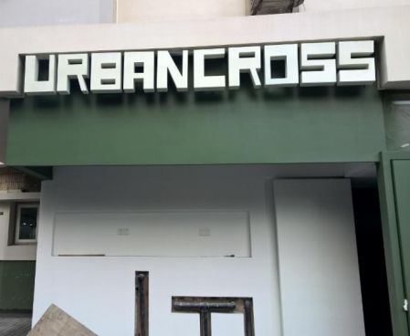
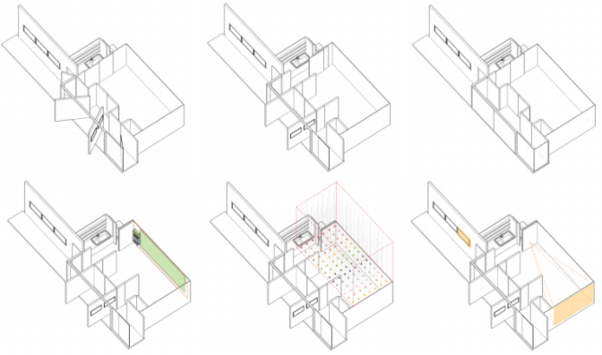

位于东湖路和延庆路的交叉口的Urban Cross衡复微空间，从2017年初开始改造，城市360团队从2017年7月开始介入，于同年11月完工。这个由“城市360”平台对接童明工作室实现改造的案例，也是城市畸零空间成功改造、使之适应城市环境的典型案例。
在短短两个多月的时间里，这个街角空间迎来送往，开始积极容纳多元的文化活动，同时也在逐步适应和融入到城市地区的日常生活之中。衡复微空间能促使更多的市民、艺术家、策展人、机构能参与到衡复微空间的内容建构之中，将更多的文化活动嵌入到与市民生活最为贴近的城市街区微空间里。
